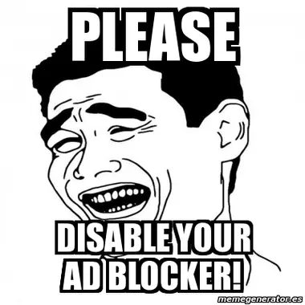

HOW SOCIAL MEDIA SHOULD WORK

every big social media platform seems to be heading down the spiral this last year in particular. reddit and twitter are the big two that come to mind, but i feel that most social media platforms have been slowly degrading for a long time, and that’s gotten me thinking a lot about them. so i’m going to sorta dissect the problems with current social media, and then analyze how i think they could be fixed.
WALLED GARDENS
if you don’t know, both twitter and reddit recently restricted access to their APIs. an API is basically what allows third party applications to get and send data to or from the site. they are still accessible via a payed plan (and very limited free tiers), but it’s so expensive that it’s almost unaffordable for any non-trivial use. the third party reddit app apollo, for example, would have needed $20 million USD yearly to continue operation, and shut down as a result. this drastically degrades the user experience in a number of ways.
first, you’re forced into using the official clients, apps, and tools. the official reddit app for mobile is infamously terrible, which is why so many people were using third party apps like apollo. but now, it’s the crappy official app or bust. even worse for reddit, third party moderation tools don’t work anymore, further harming the user experience. the same goes for twitter, many bots just stopped working.
if you still want to use twitter, this extension is pretty nice (if a bit buggy).

you can always count on a developer with an anime profile picture.
second: bots don’t work anymore without web scraping, which is very not good. calling an API is just asking for specific data, while web scraping involves loading an entire page and then scanning it for the data you want, so it’s a lot more taxing.
web scraping has become much more prevalent after the API lockdowns, which has even led twitter to implementing rate limits. rate limits are restrictions on the amount of tweets you can view per day, further locking down the site and hurting the user experience. this is almost certainly to cut costs amidst the huge spike in web scraping that’s occurred after the API restrictions, especially given twitter isn’t doing too well financially.
MONTIZON, THE ALMIGHTY ALGORITHM
remember, montizon loves you
the defining difference between the “old web” (before the mid 2000s) and modern web is the prevalence of algorithmic recommendations. i don’t really care what specific site we’re talking about, all of their algorithms suck.
they are the main reason why social media is so addictive. the system isn’t engineered to show you content you want to see, but rather to capture as much as your time as physically possible. speaking personally, in the past few years i have started to realize that i don’t actually enjoy most of the content i consume. i just kinda get drip fed while i’m looking for the 1% of actually good stuff i like. i don’t think i have to tell you that this is really awful. it’s one thing to spend a bunch of time watching movies, reading books, or playing video games if they’re GOOD and you genuinely get something out of them. but most content on these platforms is just vapid garbage that you would never watch if it wasn’t shoved in your face.
all these algorithmic recommendations aren’t really that great because they have no good way to distinguish quality. they can only show you things that are popular, or vaguely similar to other content you already like. this has a knock on effect of making it extremely hard for new creators to gain traction. the people at the top will have a huge algorithmic advantage over those just starting out, regardless of who’s actually making the better content. this leads to stagnation and a degradation of content quality, as it’s often extremely difficult to find smaller creators. of course, someone could always randomly blow up, especially if they’re riding a popular trend to the top, but these spikes in popularity are often only short term. it’s pretty difficult to “organically” grow on these platforms, and that really sucks. i will admit that the algorithm isn’t completely useless for discovering new creators and content. i have found lots of cool and obscure videos and games over years and years of near daily usage (on youtube especially). but it’s still pretty uncommon for the algorithm to recommend something great that i wouldn’t have found otherwise.
the good way to find new creators is to just look at the people you’re already following, and see who they follow. youtube used to make this really easy, as previously you’d get a notification when a channel you were subscribed to liked another video. now it’s a bit harder, but still possible.
but going back to content quality, algorithms often actively encourage worse content. no matter how obtuse google or tiktok or whoever might try to make them, people are always going to find techniques to boost their search and discovery, often at the cost of quality. look at youtube. channels make filler uploads to retain relevance, pad out videos to gain more ad revenue and watch time, constantly beg you to subscribe, use clickbait to drive growth, and more, all to try and satisfy the algorithm instead of the viewers.
CURATING COMMUNITY

this is an under-discussed aspect of these social media platforms, but i think the way they curate a specific type of community through engagement (fake internet points) and moderation is extremely important.
let’s start with reddit. on there, every user can upvote or downvote posts and comments to determine what rises to the top. the result is that the best content ends up with the most exposure… sort of. the problem is that communities will develop a very narrow view of what is “the best.” if an opinion / preference has just a very slight majority, it will get posted and upvoted more, causing more users, and even moderators, to see it and then adopt that preference from increased exposure, and the cycle will snowball from there. this is often called the “reddit circlejerk,” and it’s why reddit has a reputation for being extremely toxic towards dissenting opinions. of course, reddit is split into many different subreddits (sub communities with their own rules and moderation), but you can see this same thing playing out on more centralized sites like twitter to a lesser extent. while having upvotes and downvotes to filter content is good for many types of communities, it really harms content diversity and is terrible for discussion.
but one thing i think reddit does get right is the moderation rules. specifically, i think site wide moderation is pretty poor because it’s very difficult to enforce, and there’s going to be a lot of disagreement on what the rules should be. for example, take youtube’s decision to prohibit “creator on creator harassment” (criticism videos) some years ago. is that a good change? we could argue all day, but it really just comes down to what type of platform you want youtube to be: sanitized but more safe, or toxic but more free. these cannot coexist in the same space, which is why i think splitting reddit up into subreddits with their own rules is very valuable.
THE ADVERTISING MODEL
the advertising model has been a pretty big failure for both the platforms and the users. if you don’t know, most social media giants don’t make profit very consistently and basically survive off investor funding. look at twitter, for example:

youtube isn’t publicly traded, so we have no idea how profitable actually they are. however, many people suspect it doesn’t actually break even (or at least not by much), and is only kept alive by google for the user data. reddit is also in a similar situation, as they are still a private company and don’t usually publish much it’s financials. the fact that they aren’t published is in itself pretty telling.
ad rates really aren’t sustainable even at a massive scale. but they are also really annoying for the users. especially in recent years, platforms have tried to increase ads to try and compensate for their losses. this only leads more people to use adblock, so revenue goes down, which then necessitates that advertising is increased even further, and the cycle continues. this really hurts both parties. the platforms are left with declining revenue, and the users are left with an increasingly worse experience.
you might have noticed that i omitted mentioning sponsors. and that’s because, if i’m being honest, i actually kind of like sponsors! there’s definitely a right and wrong way to do them of course. but if the creator is responsible and is actually picking a sponsor that is trustworthy and relevant to the content, i think it’s waaaay better than google adsense.
THE FEDIVERSE: AN INCOMPLETE SOLUTION

the fediverse is basically a collection of decentralized social media apps that’s supposed to solve most of these problems. what “decentralized” means is that there’s no singular owner… i’ll use mastodon as an example. mastodon is basically a twitter clone, but there’s no singular mastodon site. rather, there’s different “instances” (also called “servers”) of mastodon on separate sites (i.e, mastodon.social, mstdn.plus, waaaay more). each instance is independently operated with different rules, and is basically it’s own mini twitter. some instances are general, and some are specialized for a specific topic. so you can seek out a more specialized instance rather than having everything just dumped into one pile like with twitter. instances also give you more options, so if the admins do something dumb and ruin an instance, you can just hop to a different one… at least in theory.
but that decentralization also causes a big problem: things are a lot more fragmented. well, sort of… it’s complicated. you can only directly post to one instance, the one you made your account on. however, many instances are “federated” with other instances, which basically means they can view posts from each other. for example, i made my account on the instance mstdn.plus, but i can still follow someone from mastodon.gamedev.space and view their posts because our two instances are federated. you can also post using hashtags, which anyone can post to regardless of what instance their account is on. this is the best way to view a specific kind of content, but it also kinda undermines the purpose of themed instances. it’s weird, as instances are supposed to be the selling point of mastodon, but they also kind of… doesn’t really matter, since you usually just go to a hashtag anyways and view posts from (almost) everyone.
most instances are federated with most other instances, hence the “fediverse.”
the fragmentation problem gets even stranger when you look at lemmy, a reddit clone. lemmy has TWO layers of fragmentation: by instance, and then by the communities within that instance. a lemmy instance is basically an entire reddit, and a community within the instance is equivalent to a subreddit. sometimes this works okay, but i still think it’s not great because there’s a lot of duplicate communities run on different instances. for example, if you want a technology community, there’s one on beehaw.org, lemmy.world, and lemmy.ml. these are all general instances with similar rules, so there’s really no benefit to having the communities split up like this.
and having independently run instances has some downsides as well. they need money, surviving on a combination of donations and out of pocket funding from their owners. if the instance you made your account on shuts down, your account basically goes down with it. the benefit of being able to “instance hop” isn’t fully there in my opinion.
honestly, i think the main upsides of these decentralized platforms is that they are open source and… not run by idiots. i think they are definitely better than the current mainstream platforms we have now, but the way they function is a bit flawed. still though, they’re the best thing we’ve got, so i’d recommend trying them out if you’re interested.
HOW SOCIAL MEDIA SHOULD WORK

so how would i fix all these problems?!??!?! my ideal social media would work something like this:
- decentralized into instances, each independently run and operated with their own rules and moderation
- you make one account, and can use that to access all instances. this makes onboarding much easier (you don’t have to worry about which instance you make your account on), and it makes it easy to hop instances if one goes down the spiral.
- instance owners can control whether there’s likes & dislikes, and whether the numbers are public or hidden. as discussed previously, i think different communities benefit from different systems.
- instance owners can finance it through donations, sponsors, ads, or whatever. the platform’s operating costs only need to cover the landing page and user profiles, which is manageable enough that it could probably subsist off just donations... maybe. i mean, all the instances are relying on it to work, so i think there’d be plenty of incentive. alternatively, the platform could also take a small cut of ads run by instance admins or something.
- there’s no communities within instances, as adding an additional level of fragmentation does more harm than good. i think it would be much better to just have flairs on posts (again, controlled by the instance admins).
- no algorithmic recommendations. either sort by date, or by likes.
this isn’t exactly groundbreaking… it’s basically just if ActivityPub (the protocol used by fediverse apps) had an account tied to it. but i still think this would be much better than the fediverse apps we’ve got right now. the convenience of mainstream social media & the decentralization of the fediverse.
"hey idiot what about you're omori mod you said you were making 7 months ago!??!?!"
it's probably canned. but don't worry, i've got something much more interesting in the works to prove the concept >:)
NonGMOTrash
july 15th, 2023
(last modified: january 21st, 2024)